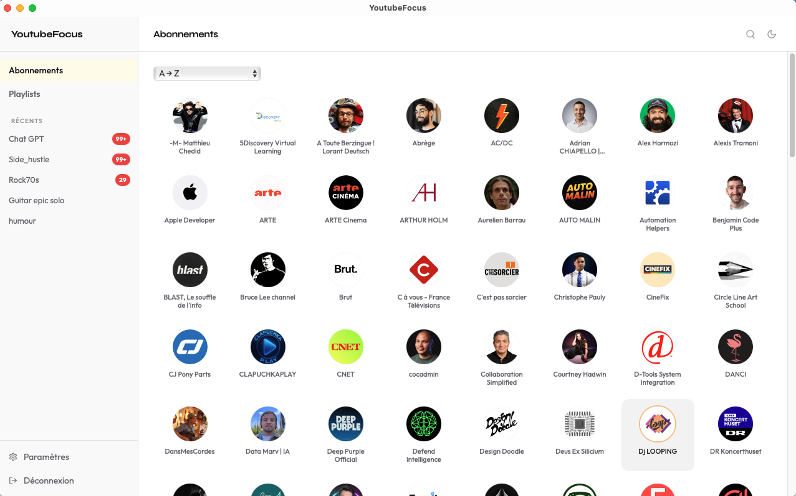
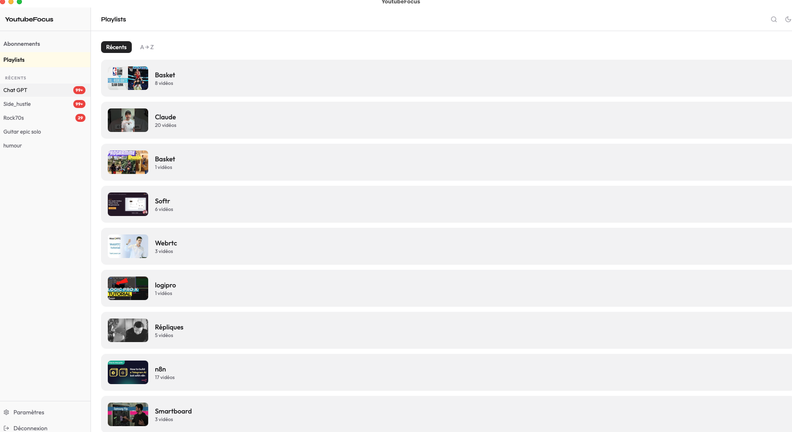
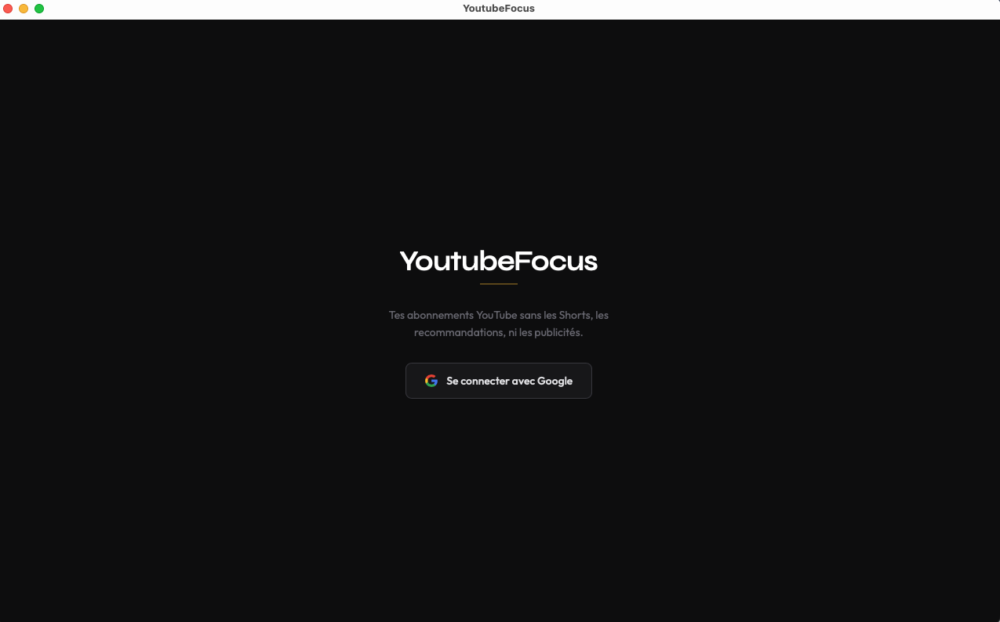

Naviguez dans vos abonnements et playlists YouTube sans Shorts, sans recommandations algorithmiques, sans publicités. Interface sobre, rapide, qui respecte votre attention.



Toutes vos chaînes et playlists en grille, triables par nom, date ou popularité.
Les vidéos de moins de 60 secondes sont automatiquement masquées. Seuil configurable.
Marquez les vidéos comme vues. Filtrez pour ne voir que celles qui vous attendent.
Suit votre préférence système. Basculable manuellement depuis l'interface.
Vos données sont stockées sur votre appareil. Quota API préservé, chargement instantané.
L'app n'écrit rien sur YouTube. Elle lit uniquement vos abonnements et playlists.
M1, M2, M3, M4 — fichier .dmg aarch64.
Premier lancement : clic droit → Ouvrir (Gatekeeper).
Mac Intel — fichier .dmg x64.
Premier lancement : clic droit → Ouvrir (Gatekeeper).
64-bit — fichier .msi ou -setup.exe.
Premier lancement : « Informations complémentaires » → « Exécuter quand même » (SmartScreen).
Rendez-vous sur console.cloud.google.com, connectez-vous, puis créez un nouveau projet (ex. MesVideos).
Menu → API et services → Bibliothèque → recherchez YouTube Data API v3 → Activer.
Identifiants → + Créer des identifiants → Clé API. Copiez la clé affichée.
+ Créer des identifiants → ID client OAuth 2.0 → Type : Application Web.
Ajoutez cette URI de redirection exacte : http://localhost:5173/callback
Copiez l'ID client généré.
Google Auth Platform → Audience → Utilisateurs test → ajoutez votre adresse Gmail.
Au premier lancement, l'écran de configuration apparaît automatiquement. Collez votre clé API et votre ID client, cliquez "Enregistrer et continuer".
| Couche | Technologie |
|---|---|
| Shell natif | Tauri v2 Rust |
| Frontend | React 18 Vite 5 TypeScript strict |
| Styling | Tailwind CSS v3 |
| State | Zustand |
| Cache local | Dexie v4 IndexedDB |
| API | YouTube Data API v3 OAuth 2.0 |